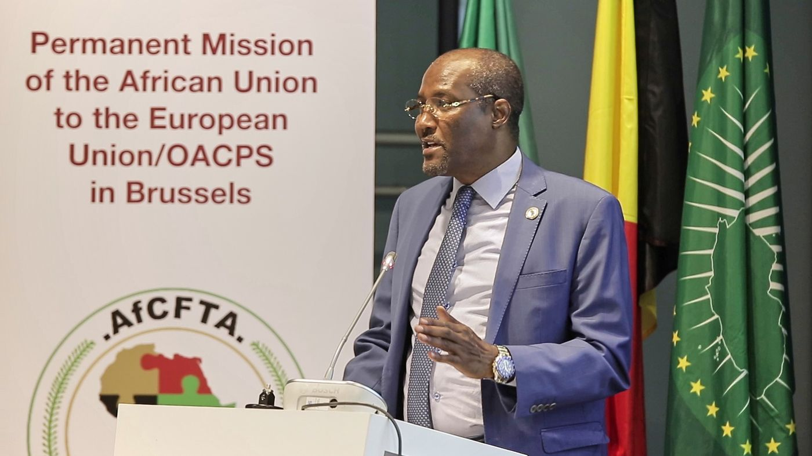

La référence
Journée de l’Afrique 2023 — Bruxelles
Deux journées tenues sous le patronage de la Mission permanente de l’Union africaine auprès de l’Union européenne et de l’Organisation des États d’Afrique, des Caraïbes et du Pacifique (OEACP), et du Groupe africain des Ambassadeurs à Bruxelles (GAAB) : un séminaire le 25 mai, une célébration le 26 mai.
Xavier Itota en a assuré la couverture vidéo et, avec un photographe partenaire, la couverture photographique. Les films ont été remis à l’Union africaine pour diffusion sur ses propres canaux.
Les films
Films réalisés pour l’Union africaine.
En détail
Le contexte
Chaque année, la Journée de l’Afrique réunit à Bruxelles le corps diplomatique africain, des représentants des institutions européennes et de la société civile. L’édition 2023 a rassemblé ambassadeurs, ministres et hauts responsables.
La couverture
Couvrir l’ensemble des deux journées : discours, moments protocolaires et temps d’échange. L’enjeu : une succession dense d’intervenants de haut rang, sans temps mort ni seconde prise possible. La captation devait suivre le protocole et un programme minuté.
La réalisation
La captation vidéo a été complétée par une couverture photographique menée avec un photographe partenaire. Le dispositif visait à saisir chaque prise de parole en restant discret et mobile. Le montage et le traitement des images ont été assurés par Xavier Itota.
Ce qui a été remis
- Deux films, un par journée : discours et moments protocolaires.
- Une série de photographies des intervenants et des temps forts.

Qui
Xavier Itota
Réalisateur vidéo et photographe établi à Bruxelles, vingt ans de métier. Son parcours s’est construit sur la scène culturelle africaine et caribéenne de Bruxelles, dont il connaît les lieux, les institutions et les usages. African Protocol prolonge ce travail auprès des représentations diplomatiques.
Prendre contact